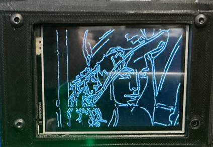
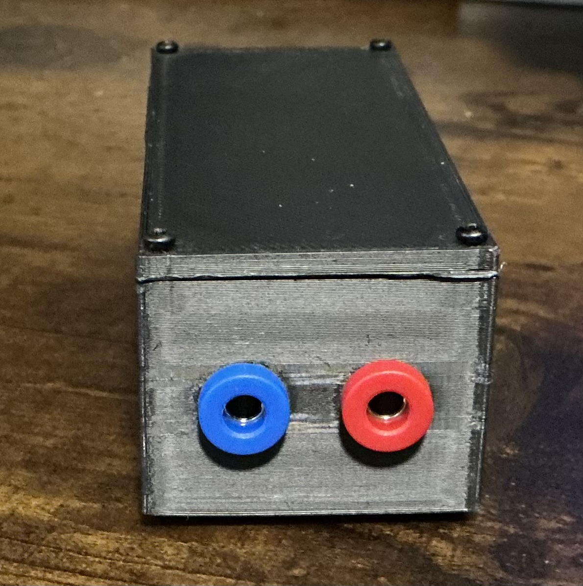
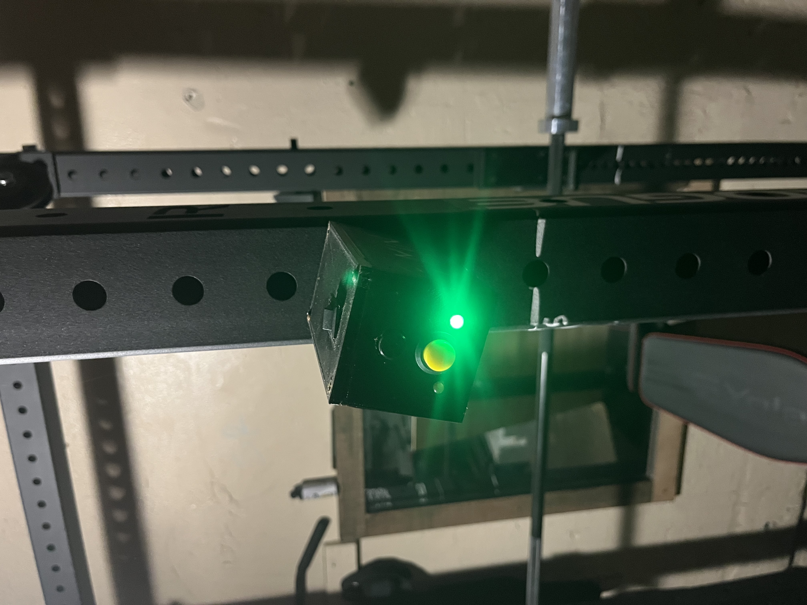
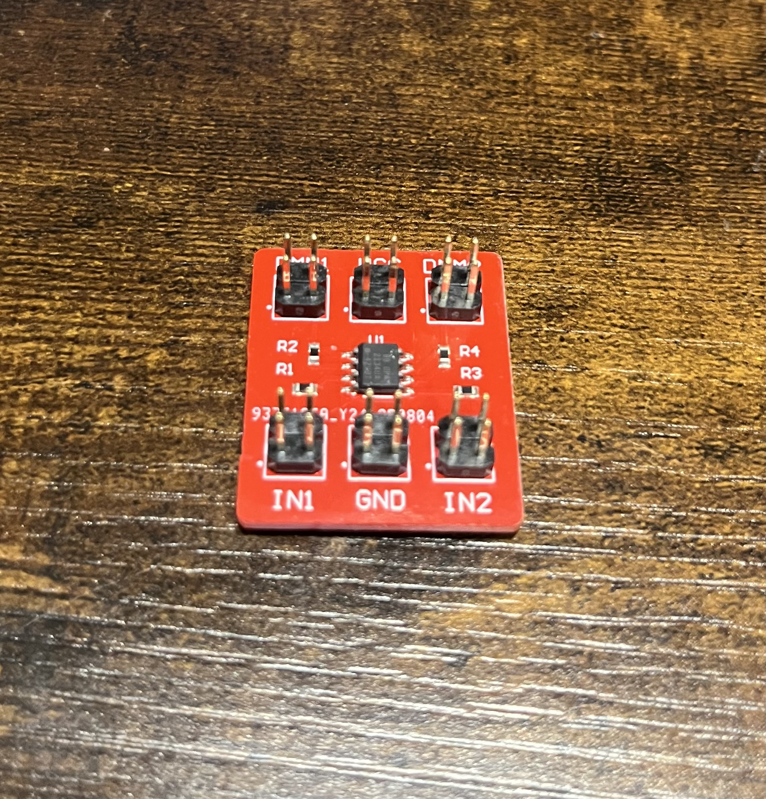
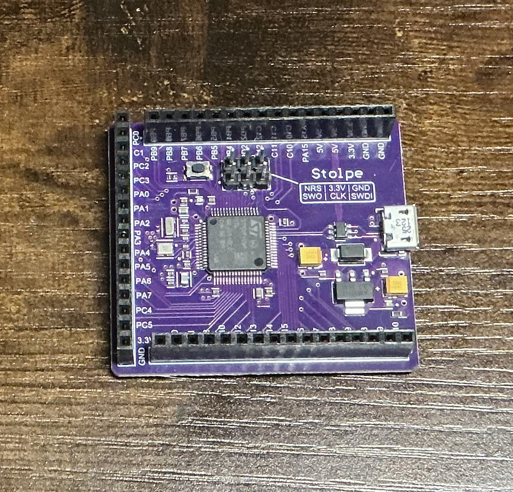
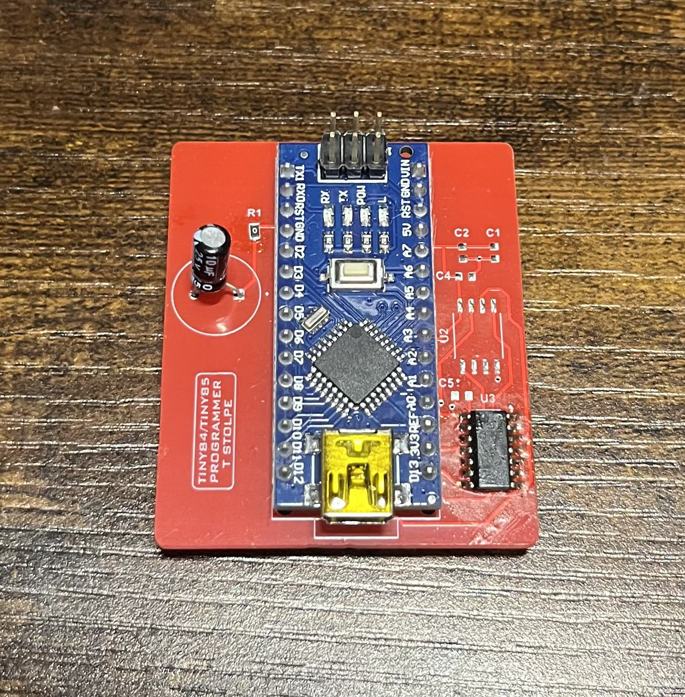
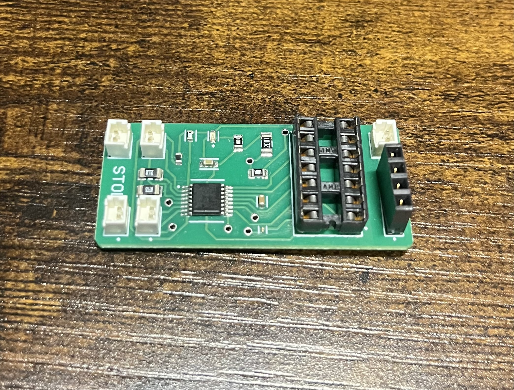
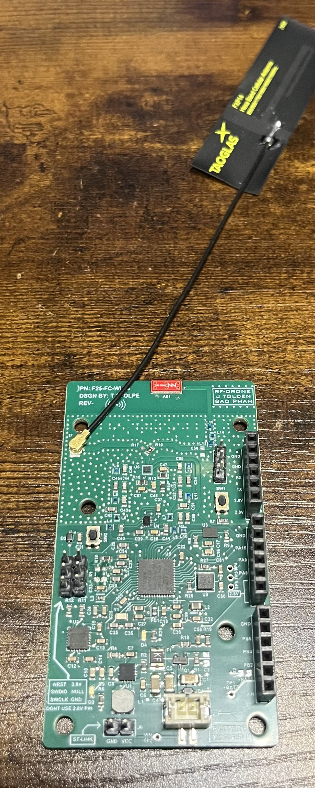
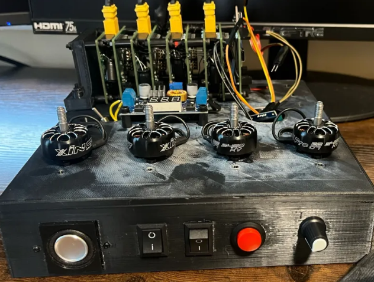
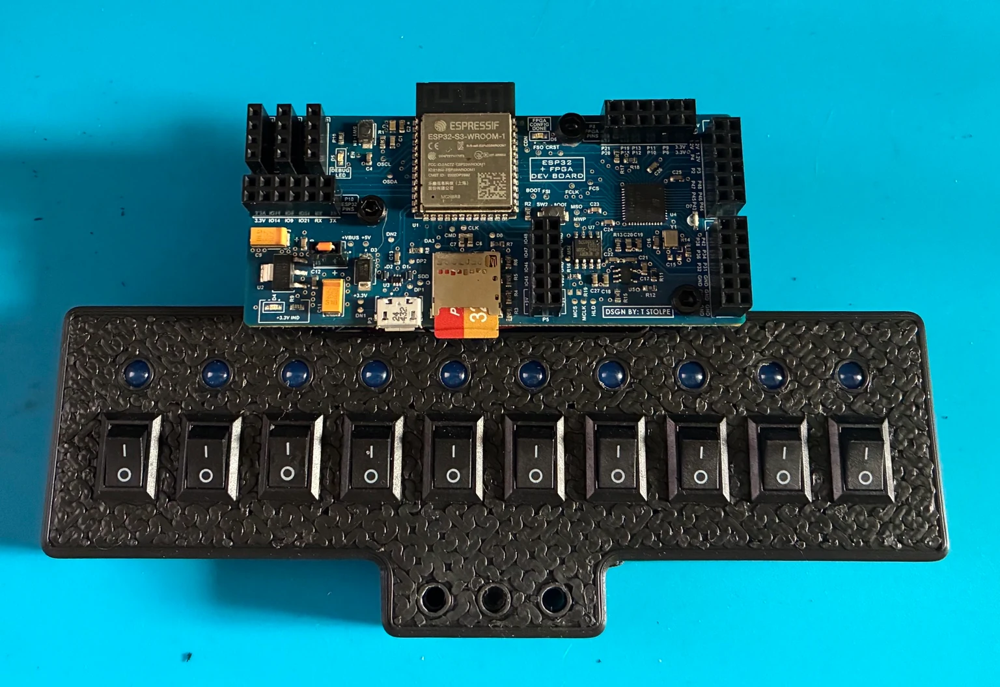

01Delivered client prototype
Edge-Detection Camera
A camera that highlights outlines in an image and shows the result on its own screen.
OTHER ELECTRONICS PROJECTS
Measurement tools, motor controllers, development boards
and client prototypes.

01Delivered client prototype
A camera that highlights outlines in an image and shows the result on its own screen.

02Client design for ~200 units
A small tester that beeps when a circuit is connected, using very little test current.

03
04University teaching hardware
A small board that helps a meter measure a circuit without changing the reading.

05Learning / portfolio build
A custom microcontroller board for trying out sensors, firmware and new circuits.

06Functional utility board
A dedicated board for loading firmware onto small ATtiny chips.

07Functional early prototype
A custom board that controls the left and right motors of a small RC car.

08Portfolio RF platform
A custom development board for experimenting with wireless links and sensors.

09Senior design team prototype
A team-designed system of motor-control modules that can be stacked as the motor count grows.

10Development hardware
A hands-on board for experimenting with a microcontroller and programmable digital logic together.